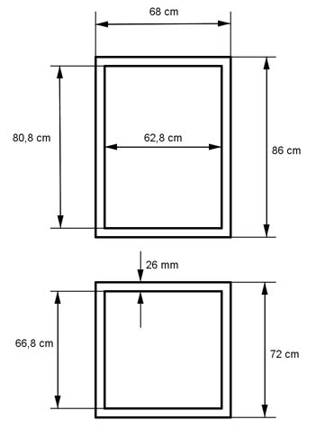

Aufgabe 158 Ein Holzkasten ist außen 68 cm breit, 72 cm lang und 86 cm hoch. Wie viel m³ Holz braucht man für 30 rundum geschlossene Kästen, wenn die Wände 26 mm dick sind und 12% Schnittverlust entsteht?  Volumen eines Kastens: 26 mm = 2,6 cm V = 2 * Boden + 2 * Seite 1 + 2 * Seite 2 V = 2 * 72 cm * 68 cm * 2,6 cm + (2 * 66, 8 cm * 80,8 cm + + 2 * 68 cm * 80,8 cm) * 2,6 cm V = 25 459 cm² + (10 794 cm² + 10 988 cm²) * 2,6 cm V = 25 459 cm³ + 56 633 cm³ = 82 092 cm³ = 0,082 m³ V30 = 30 * 0,082 m³ = 2,46 m³ Unter Berücksichtigung des Schnittverlustes. Verhältnisgleichung. 2,46 m³ : 88% = x : 100% Inneres Produkt = äußeres Produkt x * 88% = 2,46 m³ * 100% |:88% x = 2,795 m³